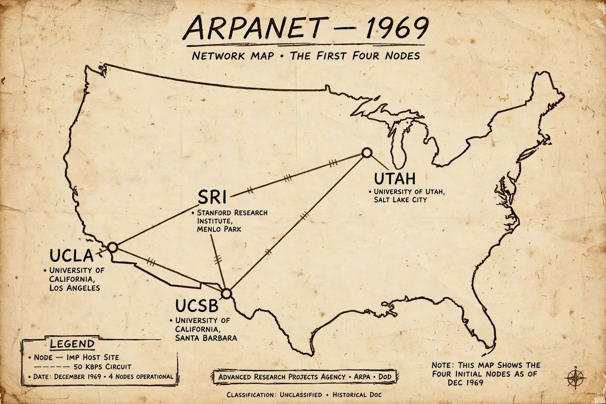

ARPANET
| Type | Packet-switched computer network |
|---|---|
| Launched | 1969 |
| Discontinued | 1990 |
| Successor | [[Internet]] / NSFNET |

[Image: a 1969 map of the early ARPANET, showing the first four nodes in California and Utah connected by lines]The Advanced Research Projects Agency Network (ARPANET) was the first wide-area packet-switched network and the direct precursor of the Internet. Funded by the Advanced Research Projects Agency (ARPA) of the United States Department of Defense, it was designed in the late 1960s to link computers at universities and research laboratories so that scarce computing resources could be shared.
The first four nodes — at UCLA, the Stanford Research Institute, UC Santa Barbara and the University of Utah — were connected in late 1969. The first host-to-host message was sent on 29 October 1969; the system crashed after the first two letters of the word LOGIN had been transmitted.
Development
ARPANET drew on the packet-switching ideas of Paul Baran and Donald Davies, and on J. C. R. Licklider's vision of an 'Intergalactic Computer Network'. Bolt, Beranek and Newman built the Interface Message Processors (IMPs), minicomputer-based switches that formed the network's backbone.
In the 1970s the network grew steadily and produced several landmark applications, including electronic mail (introduced by Ray Tomlinson in 1971, who chose the @ sign for addresses), file transfer (FTP) and remote login (Telnet).
Transition to the Internet
Vint Cerf and Bob Kahn developed the Transmission Control Protocol and Internet Protocol (TCP/IP) to interconnect different networks. ARPANET adopted TCP/IP on 1 January 1983, a 'flag day' often regarded as the birth of the Internet.
ARPANET was decommissioned in 1990, by which time its role had been taken over by NSFNET and commercial networks, but its design principles continue to underpin global networking.